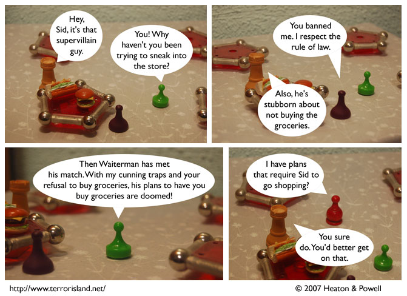

Strip #197
— Friday, September 14, 2007
Stephen doesn’t remember the Green Grocer’s name.
Notes, Thoughts, &c.
Ben’s Notes
You know, the Green Grocer, Sid, and Waiterman all have kind of similar shapes. Maybe we should have tried to bring in the Unity and the furniture salesman instead of Stephen. Then they’d all have that look going.
Lewis’s Notes
I am trying out Yoga today. No Joke! My plan is to score twice as many points as any other rookies, and win the game of Yoga.